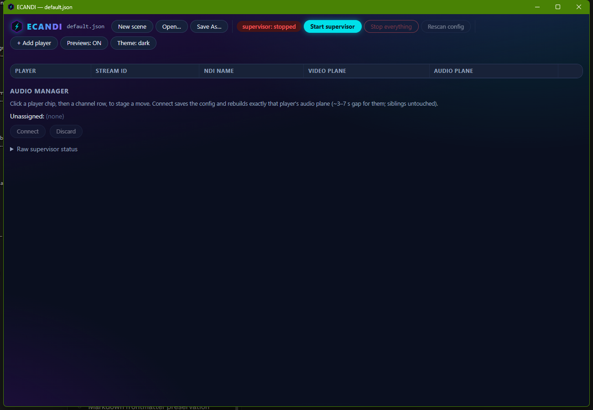
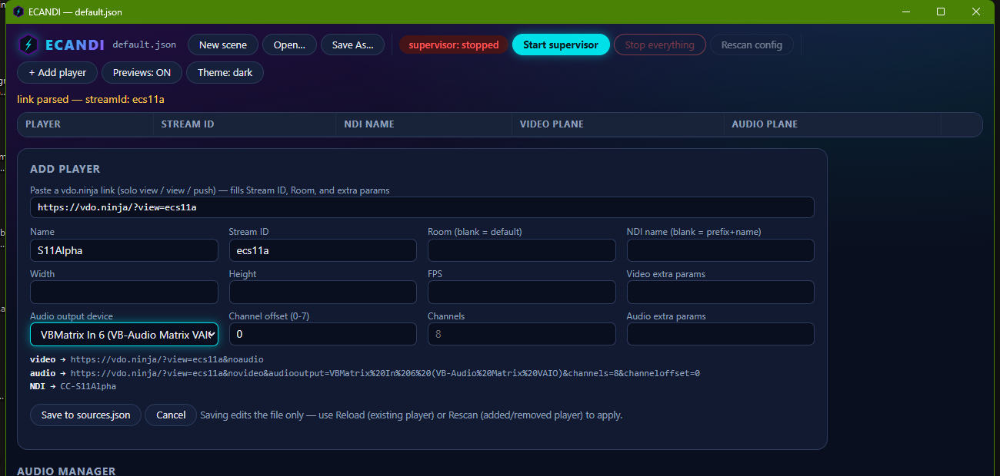
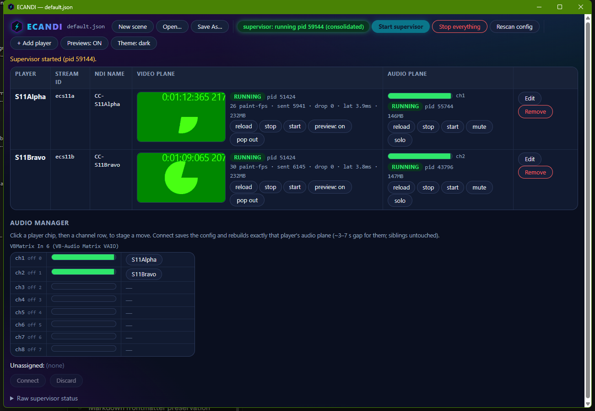

Your first fifteen minutes. By the end of it, one remote guest's camera will be an NDI source in OBS and their microphone will be on its own mixer channel.
ECANDI is for the person running a multi-guest live show: each guest joins through a vdo.ninja link, and ECANDI turns each of them into two independent things — a named NDI video stream for OBS, and one dedicated audio channel on a virtual audio cable. The two never touch each other, so fixing one guest's audio never disturbs anyone's video.
You need three things besides ECANDI:
| Thing | Why | Notes |
|---|---|---|
| A vdo.ninja link per guest | This is how their camera and mic reach your machine | A "solo view" link from your director's room, or any ?view=… / ?push=… link |
| A multi-channel virtual audio device | Where each guest's audio lands, one guest per channel | VB-Audio Matrix (or VoiceMeeter) with an 8-channel VAIO is the tested setup |
| OBS with the DistroAV (NDI) plugin | Consumes the video streams | On this machine or any machine on the same network |
If you only want to see ECANDI work, you can skip the audio device — video alone is a complete demonstration.
Run ECANDI-setup-1.0.0.exe.
C:\Users\<you>\AppData\Local\Programs\ECANDIYou get ECANDI in the Start menu and on the desktop. Nothing else needs installing — the custom Electron runtime, the NDI runtime, the native sender module, and the PowerShell helpers all ship inside the app.
Portable option:
ECANDI-portable-1.0.0.exeruns without installing. Same app; it unpacks to a temporary folder on each launch.
Open ECANDI. You land in the console on an empty scene:

A few things to know about this window:
default.json, named in the title bar) is your guest list. It lives in Documents\ECANDI\, not inside the installed app, so it survives upgrades and uninstalls.supervisor: stopped pill tells you so.Click + Add player.
Copy the guest's vdo.ninja link and paste it into the top field — the one
labelled Paste a vdo.ninja link. ECANDI reads the link and fills in the
Stream ID for you, keeping any parameters that matter (like &solo) and
dropping the ones it manages itself.

Then set three things:
Alice.0 is channel 1, offset 1 is channel 2, and so on. Give every guest their own.Leave Width, Height, and FPS blank unless you have a reason — blank means 1920×1080 at 30 fps, which is what most shows want.
Watch the three lines under the form as you type. They show the exact URLs and NDI name ECANDI will use. That's the whole configuration, visible before you commit to it.
Click Save to sources.json. The guest appears as a row.
Repeat for each guest. Give each one a different channel offset.
In-room links need
&solo. If your guests are in a vdo.ninja room and you paste a plain room view link, ECANDI will connect to nothing. The solo link from the director panel is the one to copy — it already has&soloin it, and pasting keeps it.
Click Start supervisor.
ECANDI brings the guests up one at a time — video first, then audio — waiting for each to finish loading before starting the next. Give it fifteen seconds or so per guest. Rushing this is what breaks other setups; ECANDI deliberately doesn't.

When a guest is fully up you see, on their row:
30 paint-fps · sent 5941 · drop 0).The Audio Manager below the rows shows the same thing channel by channel: each of your virtual cable's channels, its live level, and which guest is assigned to it.
Each guest is now on the network as an NDI source named CC-<Name> — so
Alice is CC-Alice. It shows up in OBS as <YOUR-PC> (CC-Alice).
In OBS: Add Source → NDI Source, pick the guest, and set the source's bandwidth to Highest. Do that once per guest.
The names never change when ECANDI restarts a guest, so your OBS scenes keep working through anything ECANDI does. That is the point of naming them.
CC-is the default prefix and you can change it per scene, but you rarely should — your OBS scenes are bound to these names.
Your guests' audio is now on separate channels of one virtual device. From there it is your audio setup's business, not ECANDI's: in VB-Audio Matrix (or whatever you use), each channel goes wherever you send it — to Dante, to a mixer, to a recorder.
The meters in ECANDI tell you the audio truly arrived at the device, which is the only part ECANDI can promise.
Mute — silences one guest instantly. The row shows a red MUTED chip and their meter dies; everyone else is untouched. It mutes the audio page, not the routing, so unmuting is instant and nothing reconnects.
Reload audio — the fix for one guest's audio going wrong. It rebuilds only that guest's audio, taking about 3–7 seconds. Their video does not flicker, and no other guest is affected at all.
You will not need to restart everything to fix one person. That is the whole design.
| What you see | What it means | What to do |
|---|---|---|
| RUNNING (green) | Working normally | Nothing |
| starting (amber) | Coming up | Wait |
| rebuilding (amber) | Recovering by itself after a crash | Wait — it self-heals |
| failed (red) | Gave up after repeated failures | Check the guest is still connected, then start |
| stopped (grey) | You stopped it | start when you want it back |
| MUTED (red) | You muted this guest | unmute |
| audio misrouted — reload audio (red) | Their audio is playing to the wrong device | reload on the audio plane |
| PGM (red) / PVW (green) | OBS has this guest live / in preview | Nothing — it's information |
| Empty meter, RUNNING chips | Their mic is muted or silent | Ask them to check their mic |
Stop everything stops all guests and the supervisor, and asks first.
Closing the ECANDI window does not stop your show — the guests keep streaming and reopening ECANDI reconnects you to the running session. That is deliberate: the console can crash without taking your broadcast with it.
| What | Where |
|---|---|
| Your scenes (guest lists) | Documents\ECANDI\ |
| The running log | Documents\ECANDI\supervisor.log |
| Your settings (theme, window) | %APPDATA%\ECANDI |
| The app itself | %LOCALAPPDATA%\Programs\ECANDI |
Only the last one is removed when you uninstall.
Next: MANUAL.md — every control, every state, and what to do when something looks wrong.